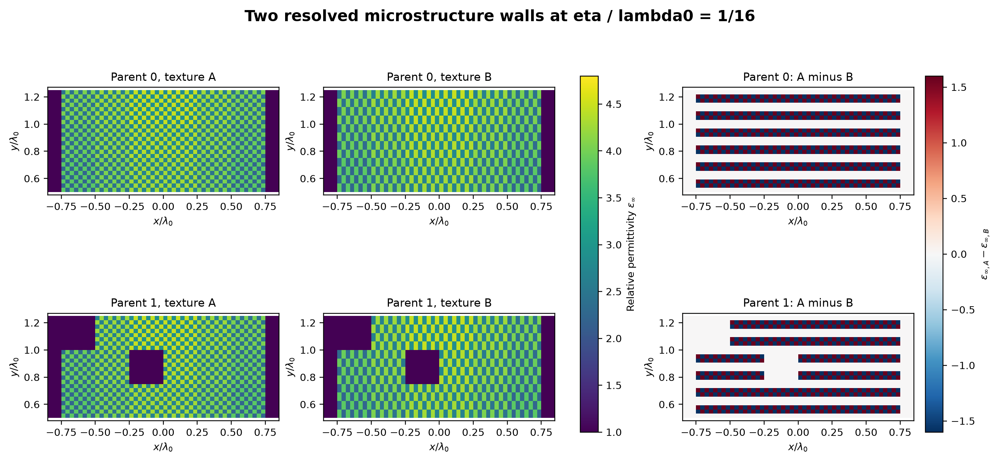
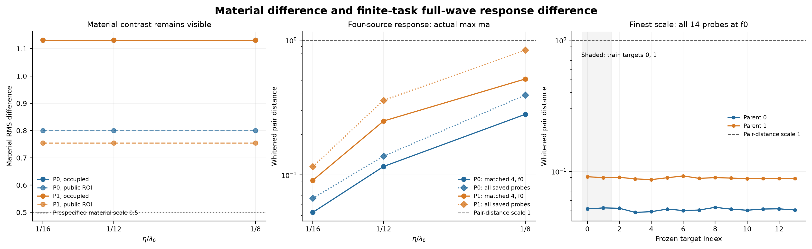
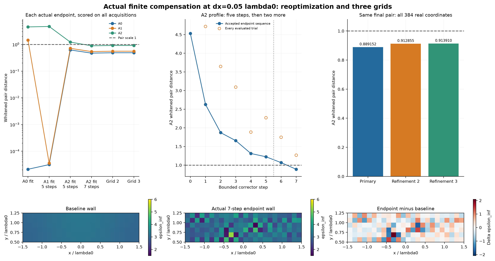
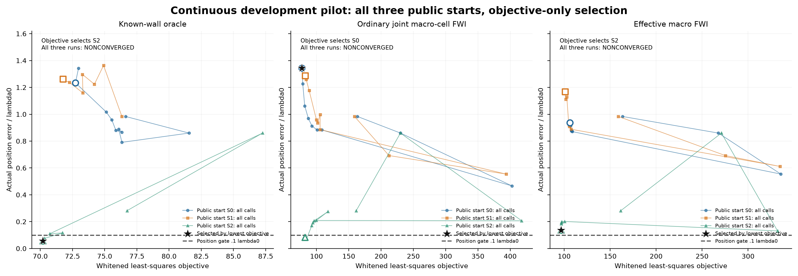
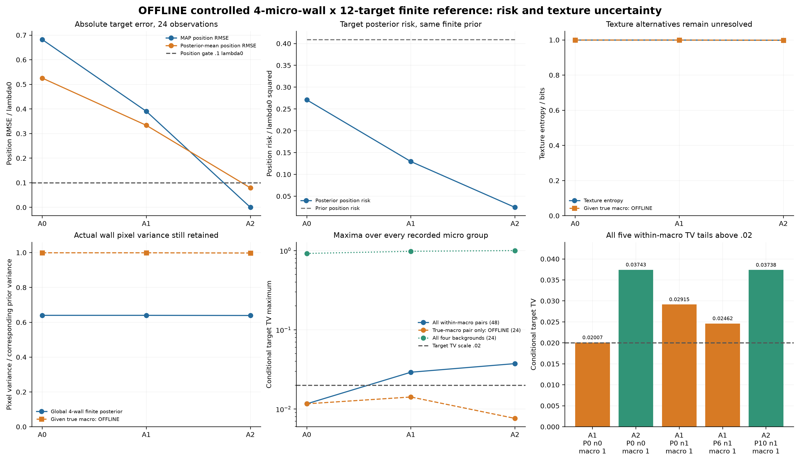
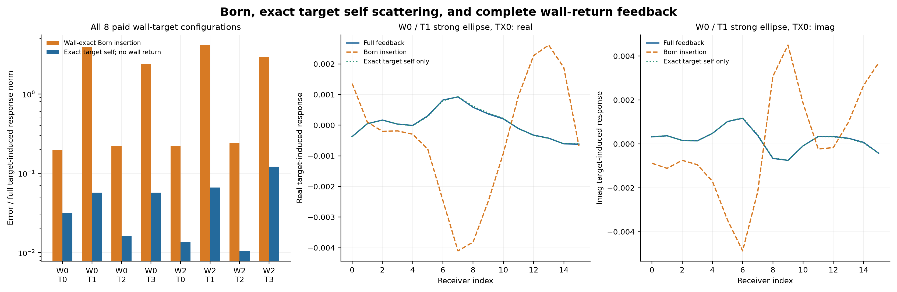

发布说明（2026-10-29）： 此为用户授权后的公开版本。网页 · 完整原始证据 Release · 匿名 raw。执行结束时的本地未发布说明及打包回执保留为历史状态；当前发布记录单列在 publication/，科研数组、判决和费用不变。
Research W-GQ-R2：不可分辨介电墙体后的目标分辨率
2026-10-29。本轮为实际执行的二维 scalar-TM、静态、非磁、被动介质开发 pilot。全文数字来自本目录保存的全波数组、有限后验或作业回执。没有训练网络，没有打开 locked 数据，没有进行三维、付费云计算或新 A17 campaign。
1. 本轮真正得到什么
物理正例与物理反例都得到了；一般未知墙在线成像和新的 Bayesian 净加速尚未建立。 这三项裁决不能压成一个总 PASS。
第一，新的普通二维微结构墙对在材料上差别很大，但整个有限目标任务面板的传播响应很接近。墙内介电率 RMS 差保持 1.13137；最细尺度下，两类宏观墙的两种纹理，在所有 12 个 held-out 目标及三频四发上的最大白化响应距离不超过 0.159971。这是新运行的完整多次散射结果，不是粗网格把材料先平均了。
第二，在一个明确的 4 墙 × 12 目标 proper finite prior 中，新增四发三频观测把目标位置后验均值 RMSE 从 0.52555 降至 0.079224 λ₀；位置 MAP 全部选对，而墙体纹理后验熵仍为 0.998388 bit。因此，目标任务的信息恢复可以与墙细节恢复分离。这是受控有限模型的物理和统计证据，不是一般未知墙支撑算法的证明。
第三，允许更丰富的合法墙材料补偿时，目标横移 0.05 λ₀ 仍能被墙变化吸收。原两发单频可补偿到约 2.1×10⁻⁵ 的离散白化距离；四发三频重新优化后得到 0.889152 / 0.912855 / 0.913910 三个离散层级的一致结果。它直接否定了“增加几条通道就必然消除所有目标歧义”的泛化。
第四，保留目标自身散射、只压缩墙返回算子，在此次 2 墙 × 4 目标面板上很有效。修正复对称配对后，rank 8 返回模型最坏白化响应误差 2.04769×10⁻⁴，rank 32 约 4.46×10⁻¹¹。但本轮没有证明新的概率策略能安全避免物理工作：模式构建、目标模板和核验仍要付费，旧 118 墙 bank 上条件目标共识也不成立。
最后，measurement-only 未知宏观墙模型没有通过定位门。新增有限宏观模型的 A2 位置 RMSE 为 0.68343 λ₀；连续 FWI 全部触及调用上限。不能用受控参考的成功替代在线识别的失败，也不能把未收敛的普通 FWI 当成算法性能上限。
2. 来源、优先级和证据身份
已完整读取附件 PDF、源 TeX、独立执行任务书、README 与 PROVENANCE。包内报告明确写着零新增 PDE，其定理、预测和预算不被记成本轮实验结果。附件的旧 GQ 信息没有包含上一轮实际执行结果：本地 research_w_gq 已有 2,252 FE、14,574 RHS 和约 1,634.69 秒 wrapper CPU 的真实 pilot。它尚未提交，因此本报告写为未提交本地执行资产，不伪造一个固定 commit。
固定仓库基线为 73ba6eec3746548bf21259f627b635678709df00。旧 BGGA 最终费用为 435.690883 秒，而非正文早期 421.3 秒快照；旧 G0 精确吸收、M4 全查、M5 无压缩、旧 M0 约 0.595 的 RMSE 均作为历史事实继承，不重新运行来制造新证据。旧 Research W 的 d_joint=0.798716、Δx=0.1 是 oracle 条件见证，本轮没有重标为在线发现。
可读固定来源：BGGA 报告。逐项来源与代码位置见 EVIDENCE_LEDGER.csv 和 source/evidence 审计。旧目录未修改，本轮没有自动提交、push 或发布。
3. 物理、统计与资源合同
采用原 FEM 后端：二维 Ez scalar-TM，μᵣ=1，exp(-iωt)，P3 连续三角元，坐标伸缩 PML，单位 outgoing 线源。材料跨频共享 ε(f)=ε∞+iℓ/f。墙占据单元 ε∞∈[1.5,6]、ℓ∈[0,.25]，空气精确为 (1,0)。
公共墙 ROI 为 [-1.5,1.5]×[.5,1.25]；公共目标 ROI 为 [-1.2,1.2]×[1.4,2.8]。微结构解析网格仅由公共坐标轴、尺度与离散设置决定，不把实际材料值、目标位置或真实占据单元作为网格输入。目标用切多边形积分：圆和最大半轴为 radius、短长轴比 2/3 的椭圆，方向 0 或 π/2；不是等面积半径。384 边形与解析入射场弱式积分一致。
保留散射场方程：
目标载荷 b_X 没有丢弃，也没有用节点入射值替代真实弱式积分。所有源共享同一个墙和同一个目标。参数是静态世界坐标，不是目标运动轨迹。
每个实、虚观测坐标噪声标准差均为 0.01。白化为先展平 source-major 数据，再拼所有实部和所有虚部，逐坐标除 σ；没有除通道数平方根。返回实验表中的 RMS 另有定义，主门只用 norm；两发 16 收对应 64 个实坐标，norm 是相应 RMS 的 8 倍。
| 合同 | 实际观测 | 实坐标数 |
|---|---|---|
| A0 | f₀，两发 ±1.5，16 收 | 64 |
| A1 | f₀，增加 ±2.25 两发，保留 A0 | 128 |
| A2 | 0.85/1/1.15 f₀，各四发，保留 A1 | 384 |
生成完整 A2 噪声后取切片得到 A0/A1，因此旧通道和噪声真正保留。新增测量的收益与内部计算近似的收益分开。
协议在新科学结果之前写入 CONTRACT.json 与 PRE_REGISTERED_PLAN.md。定位 RMSE 0.1、有限目标 TV 0.02、选择性独立白化差 0.1、同离散恒等式 10⁻⁹、backward 10⁻¹⁰ 均未事后移动。它们是本轮工程门，不是 Maxwell 常数。
机器为 Apple Silicon 本地 CPU，使用已有科学 Python 环境及固定依赖；单 BLAS 线程。初始可用内存较紧，单 job RSS cap 冻结为 4 GiB。最大实测约 3.35 GB，没有内存杀进程。未安装新的 GPU 或调度基础设施。
4. E1-A：真实解析微结构，传播差随尺度下降
两类宏观墙均有限横向尺寸、材料非均匀。其中第二类具有阶梯不规则上边界和宏观空气空腔。宏观 ε、ℓ 在 0.25 单元上变化，两纹理共享相同的局部复均值；实部加入幅度 0.8 的棋盘与交错层纹。每个 η 周期内均值相同，损耗始终合法。
每个微结构界面以 η/2 的 PSLG 边进入网格，系数在各真实单元内为常数。FEM 没有先做 cell averaging。η=1/16 的主网格约 51,274 个总自由度，独立细化达到 128,182；材料世界本身保持完全相同。
| 宏观墙 | 材料 RMS，墙内 | η=1/8 的面板最大距离 | η=1/12 | η=1/16 |
|---|---|---|---|---|
| 0，非均匀矩形 | 1.13137 | 0.391440 | 0.137800 | 0.067202 |
| 1，不规则边界与空腔 | 1.13137 | 0.843384 | 0.357874 | 0.115275 |
上述跨尺度面板包含共同固定目标/频率；最细层另外完成全部 12 个 held-out 目标。构造墙对没有使用 held-out 响应重新拟合。三频全通道的 held-out 最大 pair norm 为 0.159971。它是有限任务集合的最大值，不是对任意连续目标族的 sup 认证；三个尺度也不足以估计严格渐近阶，不宣称已数值证明 O(η) 常数。


选择每个 parent 自己最差的 f₀ held-out 探针，以及 1.15 f₀ 强目标，独立细网格端点误差为 0.00531–0.00980。细化后的 pair 距离为 0.05220/0.06548 和 0.09192/0.11435，仍远小于 1。这里没有借另一个目标的网格误差来审核最差目标。
结论：NUMERICALLY_SUPPORTED。新的普通二维材料近等效现象成立于本次有限尺度、有限任务、有限频率合同。它不是任意错误宏观墙的等效性，也不是连续 PDE 严格证书。
5. E1-B：镜像墙保护局部横向位移，但保护有边界
构造非均匀镜像墙和对称空腔，目标居中，收发成镜像对。墙材料导数限定为合法镜像方向，检验奇偶分量以及目标横向导数。
| 状态 | 墙导数奇分量相对范数 | 横向目标导数偶分量 | 目标有效信息保留率 |
|---|---|---|---|
| 镜像墙、已校准仪器 | 0.0001953 | 0.0021070 | 0.9999961 |
| 加入非对称墙变化 | 0.25944 | 0.28298 | 0.910158 |
| 允许左右相对幅相 nuisance | 同镜像材料列 | 同镜像目标列 | 0.973468 |
横向导数白化范数约 17.33，非退化；h=10⁻⁴ 的导数有限差分相对差约 1.35×10⁻⁶。奇偶泄漏并非机器零，公共三角网格本身没有强制完全镜像，因此不将它写成“10⁻⁹ 精确对称恒等式通过”。数学等变性是条件推导，实际网格结果是近似数值支持。
非对称墙和差分仪器列破坏严格保护；此次幅相 nuisance 并未让横向信息完全消失，所以不能夸大为“任意失配都彻底不可辨”。对称保护仅针对居中横向任务，不覆盖深度、尺寸或损耗。
原 asymmetry 脚本曾误把空气单元从 1 改到 1.4，合法性检查在求解前拒绝；修复仅改占据单元，保留原失败与费用。见 FAILURE_LEDGER.jsonl。
6. E1-C / E2：完整非线性补偿、新测量与重新补偿
6.1 全波 Jacobian 和物理尺度
墙采用 6×24 个 ε/ℓ 单元，共 288 个实参数；目标参数顺序为 x/y/contrast/loss/radius。每个频率的完整 wall/target Jacobian 共用 16 个接收伴随 RHS，不按材料列逐次求解。标量 FWI 目标则只用每源一个加权伴随，没有强迫普通基线计算全接收 Jacobian。
产品核的实际方向核验：墙方向 FD 相对差约 1.8×10⁻⁹–9.1×10⁻⁹；目标 x 相对差约 6.0×10⁻⁸–1.6×10⁻⁷。它们只是已检查方向，不是全 Jacobian 的统一误差上界。
| 合同 | 矩阵实尺寸 | 浮点代数 rank | 最小保存奇异值（已尺度化） |
|---|---|---|---|
| A0 | 64×288 | 64 | 2.81×10⁻⁵ |
| A1 | 128×288 | 128 | 5.59×10⁻⁶ |
| A2 | 384×288 | 288 | 9.18×10⁻⁷ |
不将这些浮点秩升级为连续 Maxwell 的满射证明，也没有删除极小但非零的奇异值后声称精确目标可辨。所有奇异值、双向 data-only Schur 和 proper tangent Gaussian 结果分别保存。原 JSON 未导出墙方向 Schur，收尾时用原始已付 Jacobian 补存到 BIDIRECTIONAL_SCHUR_SUPPLEMENT.npz，没有新增 PDE。
6.2 一条真实有限曲线
目标横移 0.005/0.02/0.05 λ₀，采用有界 GN 正确器和完整非线性目标函数接受。墙实部与损耗均被动合法，未改变每频材料。另取一个 ker(A) 方向生成第二条一阶补偿，保留两条曲线；这不等于对整个核空间完成最优搜索。
| 横移 | A0 优化后 A0 距离 | 同一端点 A1 距离 | 同一端点 A2 距离 |
|---|---|---|---|
| 0.005 | 2.77×10⁻⁶ | 0.15138 | 0.46625 |
| 0.02 | 9.47×10⁻⁶ | 0.60059 | 1.85117 |
| 0.05 | 2.10×10⁻⁵ | 1.45093 | 4.52971 |
固定这对世界看，新增测量明显有用。但不能据此说补偿集合为空。对同样 0.05 位移重新拟合墙后：
| 优化合同 | 对应数据距离 | 其他重要距离 |
|---|---|---|
| A1，5 步 | 3.55×10⁻⁵ | A2 仍为 4.71337 |
| A2，5 步 | 1.22399 | 局部优化尚在下降 |
| A2，预声明追加 2 步 | 0.889152 | 同一合法总材料、固定目标位移 |
追加两步在执行前写入独立 PLAN，硬限定为两步及一次半步重试，没有无限追求成功。最终实部范围 [1.52021,5.29598]、ℓ 范围 [0.000795,0.248790]，材料 RMS 变化 0.63565。
最终 pair 的三个离散层级为：
| 层级 | 完整 A2 白化距离 |
|---|---|
| 主网格 | 0.889152 |
| 独立细化 2 | 0.912855 |
| 进一步细化 3 | 0.913910 |
第 2→3 层的 pair 变化 norm 为 0.002278，两个单独世界的每频差约 0.0023–0.0069，均明显小于门槛 margin。没有严格连续 PDE 上界，因此只称经过三层一致性检查的离散全波有限歧义见证。它给声明离散材料类中的 ω_X(0.91391)≥0.05 λ₀ 下界，不给全局最小值、全局上界或精确连续等式。

两种一阶补偿的二阶有限 secant 都已运行。由于 A0 浮点墙矩阵满行，投影到其余空间后的二阶项接近舍入误差；这符合满射情况下二阶无法自动解除补偿的数学预期。它不认证完整盒上满射，也没有把一个最小范数解的曲率当成全部可行曲率。
结论：NUMERICALLY_SUPPORTED。新观测提高了原补偿的代价，但丰富的墙变化可重新恢复噪声尺度等价。没有找到全局 profile optimum，更没有证明所有更大目标位移可补偿。
7. E1-D：真正未知墙和未知目标，在线结果未通过
7.1 有限 measurement-only 宏观模型
在线可见 y、公共材料/目标族和六个候选宏观墙，不接收实际微结构墙身份或目标标签。目标候选为 12 个预声明静态配置；位置、尺寸、材料、损耗、形状在这个 counting prior 中有相关性，不是全部参数独立连续变化。两个微结构宏观 parent、12 个目标场景各两次噪声，不能写成 24 个独立墙世界。
比较 prior-only、joint finite MAP、目标 marginal、measurement-selected macro、普通 wall-first-fixed；Known-wall 使用真实墙，只作为明确 oracle 上限。全部在线输出封存后才评分；这是函数/独立 CLI 阶段的数据流隔离，不是 OS 级文件不可见沙箱。
| 方法 | A0 位置 MAP RMSE | A1 | A2 |
|---|---|---|---|
| Prior-only | 1.01078 | 1.01078 | 1.01078 |
| 六宏观墙目标 marginal | 0.90921 | 0.53968 | 0.68343 |
| Joint finite MAP | 0.90921 | 0.53968 | 0.68343 |
| Measurement-selected macro | 0.90921 | 0.53968 | 0.68343 |
| Wall-first-fixed | 0.90921 | 0.53968 | 0.68343 |
| Known-wall oracle | 0.68221 | 0.39051 | 0 |
A2 known-wall 的 posterior-mean RMSE 仍有 0.078874，因此“MAP 选对离散位置”不表示无不确定性。宏观模型的 A2 IoU 均值 0.58333、复材料相对误差约 0.11021，但定位失败；后两项不能代替位置门。其 95% credible set 覆盖约 0.75，也不能称合格的物理 posterior。
这组宏观类过于粗糙：3.0/3.8 的材料节点和简化纹理不能充分表示真实有效传播。新增频率会更明确地暴露模型偏差，误差从 A1 到 A2 变大不违反嵌套数据的理论信息单调性。它说明 misspecified likelihood 会使算法更自信地选择错误目标，而不是新增测量损害真实信息。
7.2 连续 off-grid FWI：可用分支不等于能从测量选中
另运行一个不在有限目标位置表上的连续目标；每臂先给两种公开 shape 起点和相同实际评价额度。发现初始起点遗漏合法椭圆方向 0 后，只增加一次同样的公共 ROI 中心起点，三臂各再付 10 次实际 full-objective，原失败保留。三个起点共 90 次评价，全部标 NONCONVERGED_CALL_CAP，不冒充成熟 FWI 的收敛上限。
最终必须按全部起点中最低完整 objective 选解，不能按真值挑选：
| 方法 | 测量规则最终选择的位置误差 | 备注 |
|---|---|---|
| Known-wall oracle | 0.055917 | 新增公开方向起点胜出；仍未收敛 |
| Ordinary joint macro-cell FWI | 1.343697 | 错误目标 objective 77.386 低于位置较准分支的 82.221 |
| Effective macro FWI | 0.136681 | 未达 0.1；仍未收敛 |
普通 joint 的另一分支位置误差是 0.082586，但不能将其作为在线成绩。它说明本例并非完全没有较好候选；模型、先验及 likelihood 排序与优化路径需要一起解决。半径和介电率也未被完整恢复，不能因某个位置较准就称 full-material target imaging 成功。

结论：ONLINE_IDENTIFICATION_NOT_ESTABLISHED / MODEL_MISMATCH / OPTIMIZATION_NOT_REACHED。当前小型基线没有证实一般未知支撑成功；本轮也没有用它们来宣称某个新方法胜出。
8. E2 的正面证据：目标风险降低，墙细节仍宽
为把宏观模型偏差与真实信息分开，在线输出封存后，在已完整付费的 4 微墙 × 12 目标 数组上计算明确均匀 joint finite prior 的 reference。它不是连续 prior 的求积，未用于在线算法动作，也不是免费 teacher。
| 指标 | A0 | A1 | A2 |
|---|---|---|---|
| 位置 MAP RMSE | 0.682215 | 0.390512 | 0 |
| 位置 posterior-mean RMSE | 0.525548 | 0.333520 | 0.079224 |
| 位置 posterior risk | 0.270880 | 0.129509 | 0.024468 |
| 纹理后验熵，bit | 0.999357 | 0.999329 | 0.998388 |
| 纹理真值概率均值 | 0.503580 | 0.502934 | 0.508168 |
| 宏观类内纹理方差保留比例 | 0.999109 | 0.999071 | 0.997767 |
位置 prior risk 为 0.409167 λ₀²，A2 reference risk 约为其 5.98%。A2 的全墙像素方差仍保留原 finite prior 的 0.63905；不是只有热图看起来“不确定”。两种纹理材料 RMS 差超过 1，然而目标位置和有限 intrinsic 标签可恢复。

2000 次 bootstrap 先平均每个目标场景的两次噪声，再在两个固定宏观 strata 内 resample 目标场景。结果仅为描述性不确定性；只有两个宏观墙 parent，不能宣称大规模墙总体置信性或独立盲测。A2 的 24/24 HPD 包含真值也不是正式 coverage 校准。
这里的墙 prior 只含共享宏观类的两纹理。第 6 节更宽 288 维墙材料类中存在补偿，并不与此 reference 成功矛盾；它们允许的 nuisance 类不同。不能把有限 prior 的目标准确推广到所有被动墙。
9. E3：保留自散射，只压缩返回传播
使用标准两物体散射分解：
目标自散射由完整 free-target FE L0−V_X 处理，没有把目标内部高频边界电流限制到小 H 空间。d、a、B 对每个背景单独计算，目标载荷仍包含 b_X。公共 target ROI 仍有 2257 个端口，但没有预建完整 2257 列 Green；只付 32 个范围/核心 action，r=4/8/16/32 为嵌套表示。
9.1 失败和一次有依据的修正
第一种近似用同一个 Hermitian Q 左右投影。它是合法的低秩近似选择，但对于复对称而非 Hermitian 的 FEM Green 返回，输入空间没有被充分表示；rank 32 仍有 0.23094 的最坏白化误差。没有删除这 708 RHS/19 FE 的不足结果。
保持 rank 和所有目标不变，将右投影改为复对称配对：
新增 128 个共轭基 actions 和 128 个完整反馈核验 RHS，复用已付的目标模板、接收映射、参考解；并未重算完整 target bank。
| r | 返回模型最大白化误差 | 目标诱导 ROI L2 相对误差 | 完整 current 闭合相对缺陷 |
|---|---|---|---|
| 4 | 0.0734857 | 0.0340701 | 0.0267400 |
| 8 | 2.04769×10⁻⁴ | 1.69250×10⁻⁴ | 1.41556×10⁻⁴ |
| 16 | 4.04446×10⁻⁸ | 2.58322×10⁻⁸ | 2.21071×10⁻⁸ |
| 32 | 4.46426×10⁻¹¹ | 2.56824×10⁻¹¹ | 2.18696×10⁻¹¹ |
rank 32 的完整 FE RHS-relative defect 最坏约 4.35×10⁻¹²；小闭环 condition 最大约 1.335。这是有限离散、已测任务的数值精度，不是全输入空间 operator-norm、连续模式或 uniform posterior certificate。QR 与投影谱使用 Euclidean FE 坐标；场 L2 误差另用真实公共 ROI 质量矩阵计算，二者不能混称。
同一个仅为 H 拟合的基若被用于压缩整个 C_W，rank 32 白化误差仍约 5.93。它支持“保留奇异自作用”的设计理由，不等于击败为 C_W 独立训练的最优 ROM。本实现是普通 Schur/T-matrix/双侧 ROM 的实例，分解本身不作为原创算法。
9.2 完整反馈为何必要，哪部分最强
由已付 Bw/q/j0/full 数组重组，不新增 PDE：Born 诱导响应相对误差为 0.198–4.124，白化误差最大 5.48546。保留精确目标自身散射、暂去墙返回时，诱导相对误差为 0.0105–0.1216，白化误差最大 0.226586。
因此这批离墙目标中的强非线性主要来自目标自散射；墙返回较平滑、通常较弱，但不能对所有任务直接丢弃。它解释了 H 容易压缩，也限制了“增加复杂返回反馈必然带来大成像收益”的叙事。没有额外制造近共振案例；所测小闭环并不接近共振，新的低间隔/共振合同仍 NOT_ESTABLISHED。

9.3 经济性没有自动成立
表示研究的两次真实作业合计 964 RHS、22 FE、21.145463 秒 wrapper CPU，包括第一次不足、修正、参考与核验。8 个 direct full 参考本身只需 16 RHS、8 FE。研究总账不能直接冒充一个部署时延比；同时，原始 setup 与模板的已付工作已经表明小面板没有净 RHS 优势。
目标模板的 LU 可进一步按同一离散目标共享，这是标准工程复用，普通两物体基线同享。本轮没有实现其独立冷部署计时；不能将推算 break-even 当成实测速度。结论为 NET_SPEEDUP_NOT_ESTABLISHED，不是“低 rank 因而提速”。
10. Bayesian 条件共识：物理组有希望，全局省权重仍不安全
10.1 旧 118×25 bank 的新受控检验
在线只获得 prior 元数据、y 和逐原子查询 API；外侧源响应没有解码。24 例各 790 次共享逻辑查询，所有输出封存后才打开完整 teacher 和真值。这个访问身份是 REPLAY_NOT_NEW_PDE_SPEED_EVIDENCE。
新 prior-only 28 墙节点面板下：
| 方法 | 平均 target TV | TV≤0.02 例数 | 真实位置 RMSE |
|---|---|---|---|
| 普通 response 插值 | 0.074915 | 18/24 | 0.613416 |
| anchor-weighted contrast | 0.357518 | 13/24 | 0.755230 |
| sampled conditional consensus | 0.783602 | 0/24 | 0.734923 |
| 完整 finite reference | 0 | 24/24 | 0.595430 |
不同背景的条件目标分布直径几乎为 1，不能删除其相对质量。未查询原子的 [0,1] likelihood 包络保留，但没有形成非平凡的全目标共识证书。没有启动冷 Bayesian 200 原子 campaign。这个 prior-only 设计与上一轮 adaptive 节点不同，不能把性能变化归因于“contrast 公式退化”；本轮的新增结论是没有便宜的全背景共识入口。
10.2 新微结构物理类内的共识更强，但仍有尾部
用全部已付 4×12 物理表作事后诊断，两个同宏观类纹理之间的最大条件目标 TV 为：A0 0.011640，A1 0.029151，A2 0.037427。超过 0.02 的尾部为 0/48、3/48、2/48，全部保留。四背景全体的条件 TV 直径仍最高达 0.999996。
只看真宏观类时更接近，但这个筛选使用真值，只能标 OFFLINE，不能用它藏起另外五个尾部。数据明确支持：可以尝试粗化微纹理质量，但宏观传播分支的目标结论仍可能不同，不能把所有背景合并。 这些统计用了全表；本轮没有因此声称安全省去了 FE/RHS。
目标增量相近也不足够。残差投影项在此次微结构面板中最大可达约 0.11015；完整 contrast 必须保留它。新 dense 公式核验覆盖 contrast 余切、C0+H 顺序、参数依赖右端 mixed derivative 和两背景差分恒等式，均只标代数 PASS。它们没有被升级成物理 posterior 证书。
11. 失败、预算和未运行部分
| 阶段 | FE 预约/完成工作量 | complex RHS | FE cap |
|---|---|---|---|
| E1 | 300 | 1608 | 300 |
| E2 | 400 | 2640 | 400 |
| E3 | 22 | 964 | 200 |
| 合计 | 722 | 5212 | 900 总 cap |
E1/E2 的 FE cap 用完后立即封闭新物理调用；E3 剩余额度没有挪给它们。最高内存约 3.35 GB。CPU 最终权威为 PHYSICS_COST.json 的 completed-wrapper 字段；正文和 ZIP 内打包前快照不替代封账回执。
费用包含所有 source/receiver actions、伴随、拒绝 trial、目标模板、范围/核心构建、检查、失败和重跑。父子聚合时间没有重复相加。初始文档读取、交互式代码编写和最后人工式文件回读没有完整 process CPU 计时，已明确保留这一缺口；不宣称这是全部人机科研工时。
保留的实现失败包括：freeze 脚本误用 Python 关键字；asymmetry 对空气材料的非法改动；绘图元数据 int32 序列化；第三层 refinement guard 当时仅允许 1/2。最后一项在任何新 PDE 前失败，随后只扩展既有通用网格参数到 3，未放宽精度门。第一次返回低秩方案虽然程序正常完成，但表示不足也单独保留。
未执行或未建立：大规模独立确认；一般未知支撑/孔洞 posterior；完整连续目标 posterior；强共振/贴墙推广；有限非线性仪器 nuisance 补偿；付费资源；新的 NN/3D/A17；满足可靠概率门后的 Bayesian 冷部署。标准 T-matrix 与本代码同源，没有独立新算法胜出证据。
12. 原创性判断与下一轮最值得做什么
均匀化、镜像奇偶保护、隐函数定理、Schur/T-matrix 和条件混合收缩均有标准基础。重点文献核对通过 ScholarQA 获取并验证了 Cakoni 等 2019 的身份；其他检索遇到 429，因此本轮不是完整文献排他审查。Cakoni 等论文 为 bounded oscillatory scattering 的重要近邻；Haynes–Fenni 2022 的 CTMA 已利用 SVD/Woodbury 压缩多体 T-matrix，不能将本轮返回分解重新命名成原创。
当前最有独立价值的证据链是：
- 同一普通二维全波平台上，材料纹理不可分而有限目标 posterior 可准确；
- 换到更宽、仍合法的墙材料类，同一目标任务可以出现真实有限补偿；
- 新测量区分一对世界，不等于排除重新补偿的整个集合；
- 目标分辨率必须由允许的材料幅度、公共色散、观测和任务共同定义，不能只看精确局部 Schur 或墙 MSE。
这支持继续研究 Target Resolution through Unresolved Dielectric Walls，而不是声称 Wall-Free Imaging 已成功。
下一轮一个最值得突破的理论点：在声明材料幅度盒和共同频率合同下，给出目标有限位移所需的最小墙补偿代价/可行半径；它应区分精确小奇异方向与物理幅度受限方向，并在非线性返回闭环中有实际可评估意义，不能再免费假设未知的目标 inverse-Lipschitz 常数。
下一轮一个决定性实验：在公开、连续且足够表达宏观墙的 proper prior 中，用真实解析微纹理生成离网目标；给予普通 joint FWI/边缘推断充分收敛预算和相同模板权限，验证能否在不知道真实均值墙时获得 ≤0.1 的连续定位和合格区间。保留本轮有限补偿 pair 作为扩大 nuisance 类时的破坏对照。如果只有已知微纹理族的离散 reference 成功，必须收缩到受控任务分辨率论文。
返回 H 方向值得保留为标准数值工具：精确目标自散射与平滑返回的分离有强数值支持。但在便宜的组内误差/条件共识判断出现前，不启动更大 Bayesian 压缩，不用增加 rank 或网络来救其经济性。
13. 分项最终裁决
| 问题 | 裁决 |
|---|---|
| A 普通二维 Wrong Wall、目标任务传播等效 | NUMERICALLY_SUPPORTED；RMS 1.131、finite task A2 max 0.160 |
| B 未知墙/目标在线高精度 | NOT_ESTABLISHED；宏观模型失配，连续优化 cap，不能选真值较好分支 |
| C 合法全波材料补偿 | NUMERICALLY_SUPPORTED；0.05 位移，三层 A2 距离约 0.914 |
| D 目标比墙细节更易恢复 | NUMERICALLY_SUPPORTED；限 4×12 finite prior，不是一般 prior |
| E 只压缩墙返回 | NUMERICALLY_SUPPORTED；rank 8 精度高，保留精确自散射 |
| F 背景条件目标共识 | NOT_ESTABLISHED 为统一在线证书；物理微组有经验支持且保留尾部 |
| G 安全净计算收益 | NET_SPEEDUP_NOT_ESTABLISHED；没有新的 certified early stop / 冷 Bayes GO |
| H 新颖性 | 物理任务分辨率证据组合值得继续；标准代数与降阶本身不算原创 |
| I 推广限制 | 二维、静态、有限合同与 prior；没有连续 PDE/任意未知墙保证 |
| J TAP 路线 | 继续有限目标分辨率与补偿边界；算法经济性保持 NO-GO/HOLD |
机器判决见 GO_NO_GO.json，具体下一轮接口见 NEXT_PRO_HANDOFF.md。所有科学图来自保存数组，复现入口见 REPRODUCE.md。